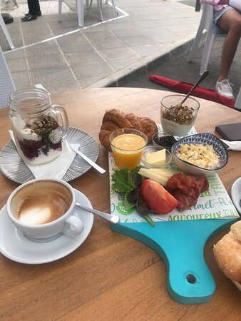

Favorite eten en drinken
In Spanje heb je verschillende gerechten die daar veel gegeten worden.
- Paëlla
- Tapas
- Patatos Bravas
- Tortilla Espanola
- Gegrilde vis van het strand
- Sangria
Paella
Paella is één van de bekendste Spaanse gerechten, welke zijn oorsprong kent in Valencia.
Inmiddels is paella in heel Spanje een bekend en veel gegeten gerecht.
Het is een typisch zondagsmaal voor de Spanjaarden traditioneel gemaakt door de man des huizes.
De hoofdingrediënten zijn rijst, vis-en schaaldieren, snijbonen, saffraan, een tomatenbasis, stukjes kip en konijn, en witte bonen. Een heerlijk gevuld gerecht wat u zeker eens moet proberen!
Tapas
Tapas is een verzamelnaam van diverse kleine hapjes voor bij de borrel. Het kan werkelijk van alles zijn. 'Tapa' betekent letterlijk vertaald 'deksel'.
Voornamelijk in Zuid-Spanje is het gebruikelijk om tapas te serveren wanneer men een aperitiefje drinkt.
De populairste tapas zijn patatas bravas, chorizo, calamares en gemarineerde olijven. Zeker iets om te proberen!
Patatos Bravas
atatas bravas zijn aardappelen die in ongelijke stukken zijn gesneden en worden gefrituurd in olie.
Ze worden ook wel 'patatas á la brava' of 'papas bravas' genoemd, maar meestal zie je ze op de tapaskaart toch als patatas bravas staan.
Vaak worden de gefrituurde aardappeltjes geserveerd met een rode pittige saus, wat 'salsa brava' wordt genoemd. Vanwege de 'simpele' ingrediënten is dit een van de goedkoopste tapas die je kunt bestellen.
De patatas bravas zijn heerlijk bij een glas bier of wijn.

Tortilla Espanola
Deze dikke omelet van ei, aardappels, olijfolie, zout en peper komt uit de binnenlanden van Spanje, het is een echt uithangbord van de Spaanse keuken.
Vaak wordt hieraan ook ui en knoflook toegevoegd. Het is zowel koud als warm te eten en echt een aanrader als u in Spanje op vakantie bent!
Gegrilde vis van het strand
U hoeft niet altijd naar een restaurant te gaan om te proeven van Spaanse culinaire hoogtepunten. Dit kan ook gewoon op het strand.
Op veel plekken aan de Middellandse zee kunt u tussen het zwemmen en zonnebaden door genieten van heerlijke gegrilde vis. Een zeer smakelijke lunch!
Sangria
Sangria (Spaans: Sangría) is een Spaanse/Portugese licht-alcoholische drank.
De basis bestaat uit rode wijn of witte wijn op smaak gebracht met vruchten, meestal sinaasappel, citroen, appel, perzik of ananas en soms ook, maar minder vaak, met meloen, mango of grapefruit.

Restaurants in Moraira
La Experiencia Koffie & Wijn bar
Knusse en gezellige zaak met diverse soorten koffie én spannende wijnen (ook per glas).Probeer ook de huisgemaakte zoetigheden. Wordt gerund door een enthousiast jong Nederlands stel.
Calle Dr Calatayud 26 | Moraira | Tel 722 34 57 67
Terra vina Tapas & Wine Bar
Kleinschalige & charmante tapasbar in het centrum van Moraira. Zeker een bezoek waard als u in de buurt bent!Calle Las Viñas 6 | Moraira | Tel 966 490 326
Restaurante Bela Dama
Restaurant bij de jachthaven van Moraira met een prachtig uitzicht op de boten.Uiteraard hier vele vis soorten op de kaart maar ook rijst gerechten.
Calle Puerto Nautico s/n | Moraira | Tel 965 744 329
Restaurante Bites & Bubbles
Deze Nederlandse uitbater hebben maar een passie en dat is lekker koken.Dit is de verborgen parel van Moraira.
Ze voeren een uitgebreide kaart met een ruime keuze uit allemaal lekkere hapjes.
Av. del Portet 45 | Moraira | Tel 692 422 032

Restaurante Select
Superleuk Spaans tentje vlakbij het strand van Moraira.Hier vind je mooie samengestelde kaart waaruit iedereen aan keuze kan maken.
De eigenaar zwaait de scepter in de keuken en de eigenaresse staat aan het hoofd van de bediening.
Zijn open voor ontbijt, lunch, tapas en diner. Tip van ons; Steak tartar & tataki atún.
Paseo Senillar 23 | Moraira | Tel 603 195 96